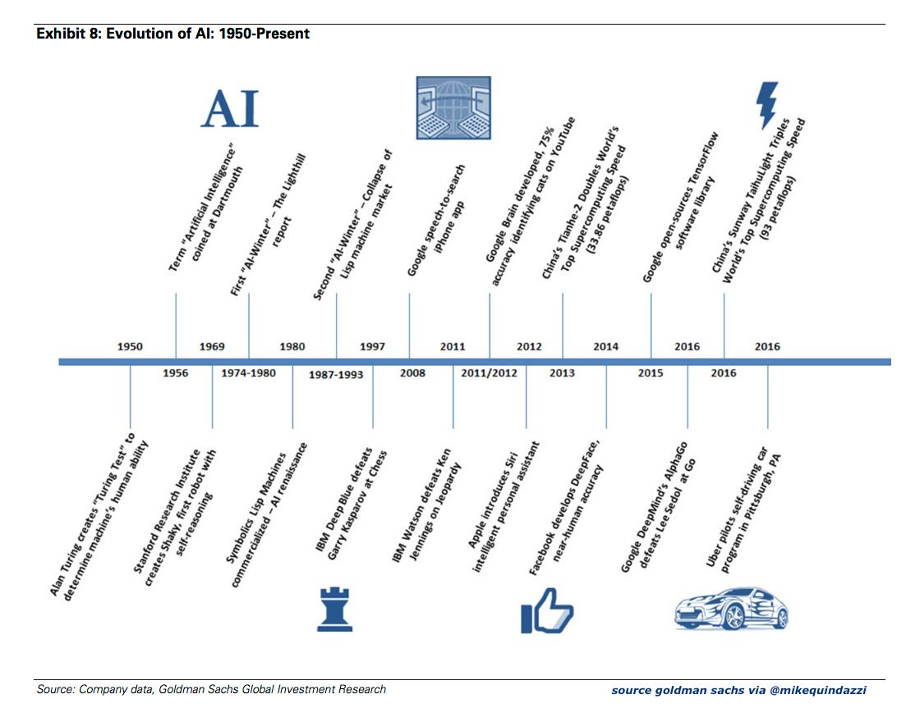

AI(Artificial Intelligence) is what we see all around us in computers today: intelligent systems that have been taught or learned how to carry out specific tasks without being explicitly programmed how to do so. Including many realistic applications: autonomous vehicles and machine learnings.
History of Artificial Intelligence
The idea of a machine that can learn and truly think like a human begins its journey along technology progress. The term, artificial intelligence, was first introduced by John McCarthy in 1956 when he held the first academic conference to discuss this subject. As the US Department of Defense took an interest in AI, this stirred engineers’ thoughts, and they began to train computers to stimulate simple human reasoning. In 1969, Stanford Research Institute created Shaky, the first robot with self-reasoning which become the significant landmark of artificial intelligence development. When IBM DeepBlue defeated Garry Kasparov at Chess in 1997, the world was impressed by the intellectual power of a machine. Today, AI provides the endless possibility for us, and it evolved into a significant role in people’s life. Digital assistance such as Siri and Alexa contributes to making life easy for saving our times. While Hollywood movies and science fiction novels portray AI as human-like robots that take over the world, many supporters appeal to accelerate the development of artificial intelligence. The conflicts between the risk and benefit of AI becomes one of the most significant questions of our time.
The timeline of AI development
Why is artificial intelligence important?
AI can help us to solve many problems in life, and also provide convenient lifestyles. It is a revolutionary technology in the modern society, but it also raises safety and economic concerns in the long term. Therefore, many voices emerged to discuss its future prospects.
About Us
This is a project for writing 50 summer 2018.
The purpose of this website is to solve problems, raise awareness, and gain influence over artificial intelligence issue.
Each group member worked on eight different materials:
Peter Ding – a website and a paper analyzing relation between AI and economy
Ziang Gao – infographics and a paper analyzing the safety concern of AI
Xingyu Zhao – a poster and a paper favor AI benefits
Yingchao Zhu – a poster and debating texts
Thanks to our professor, Kevin Moore, for this opportunity to present our ideas.